Ein Alphabet  ist eine endliche nichtleere totalgeordnete Menge, deren Elemente ai Buchstaben genannt werden. Die Länge des Alphabetes ist | A |. Eine Zeichenreihe 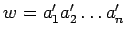 der Länge 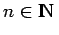, die aus Buchstaben von A besteht, ist ein Wort der Länge n über dem Aplphabet
ist eine endliche nichtleere totalgeordnete Menge, deren Elemente ai Buchstaben genannt werden. Die Länge des Alphabetes ist | A |. Eine Zeichenreihe 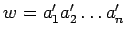 der Länge 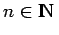, die aus Buchstaben von A besteht, ist ein Wort der Länge n über dem Aplphabet  . Mit An wird die Menge aller Wörter der Länge n über A bezeichnet. Seien 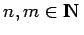 und A,B Alphabete sowie S eine endliche Menge.
. Mit An wird die Menge aller Wörter der Länge n über A bezeichnet. Seien 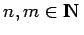 und A,B Alphabete sowie S eine endliche Menge.
Eine Kryptofunktion ist eine Abbildung 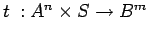, so daß die Abbildung 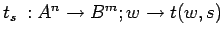 für jedes 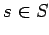 injektiv ist. Dabei werden ts und ts-1 Verschlüsselungsfunktion bzw. Entschlüsselungsfunktion genannt, w ist der Klartext und ts(w) der Schlüsseltext.
Für eine Kryptofunktion ist die einparametrige Familie 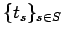 ein Kryptosystem 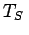. Der Begriff Kryptosystem findet Verwendung, wenn neben der Abbildung t auch Struktur und Größe der Schlüsselmenge von Bedeutung sind. Die Menge S aller zu einem Kryptosystem gehörenden Schlüssel heißt Schlüsselraum. Für n=m und A=B wird
| 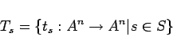 | (5.296) |
Kryptosystem auf An genannt.
Ist TS ein Kryptosystem auf 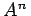, dann heißt ts kontinuierliche Chiffre, falls n=1 ist; anderenfalls ist ts eine Blockchiffre.
Kryptofunktionen aus einem Kryptosystem auf An sind zum Verschlüsseln von Klartexten beliebiger Länge geignet. Man zerlegt dazu den Klartext in Blöcke der Länge n und wendet die Funktion auf jeden der Blöcke einzeln an. Gegebenenfalls müssen noch sogenannte Blender hinzugefügt werden, um den Klartext auf eine durch n teilbare Länge zu ergänzen. Blender dürfen den Klartext nicht stören.
Man unterscheidet kontextfreie Verschlüsselung, bei der ein Schlüsseltextblock nur Funktion des zugehörigen Klartextblocks und dessen Schlüssel ist, und kontextsensitive Verschlüsselung, bei der der Schlüsseltextblock auch von anderen Blöcken der Nachricht abhängig ist. Im Idealfall hängt jede Schlüsseltextstelle von allen Klartextstellen und allen Schlüsselstellen ab. Kleine Änderungen in Klartext oder Schlüssel bewirken dann große Änderungen im Schlüsseltext (Lawineneffekt).